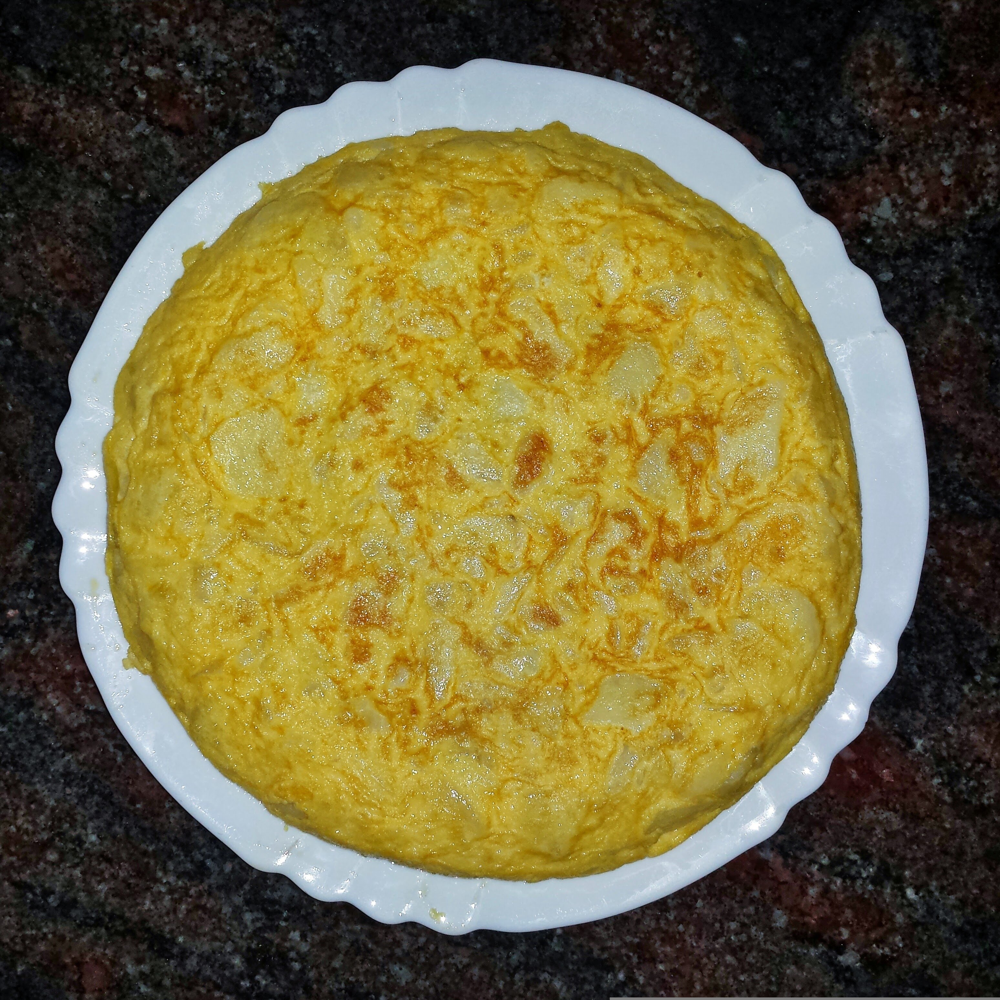
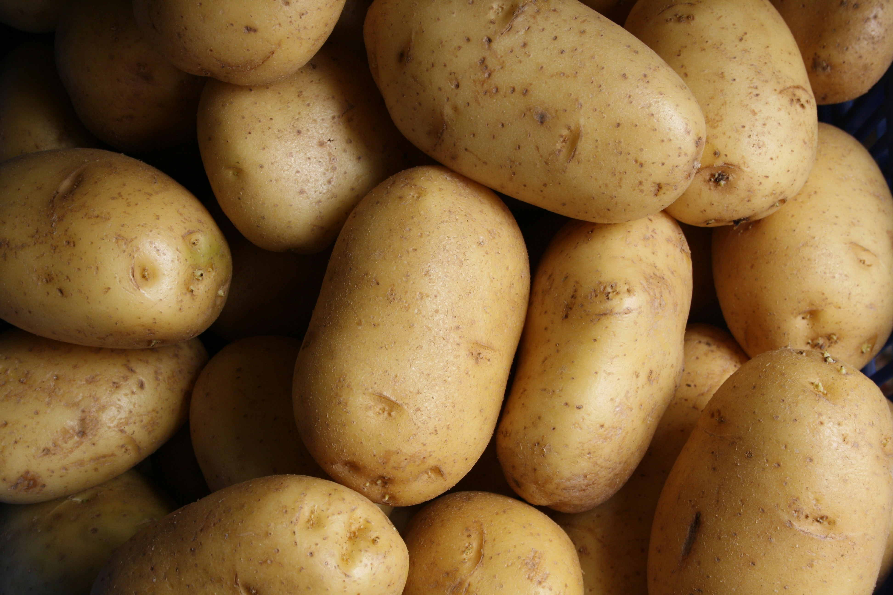
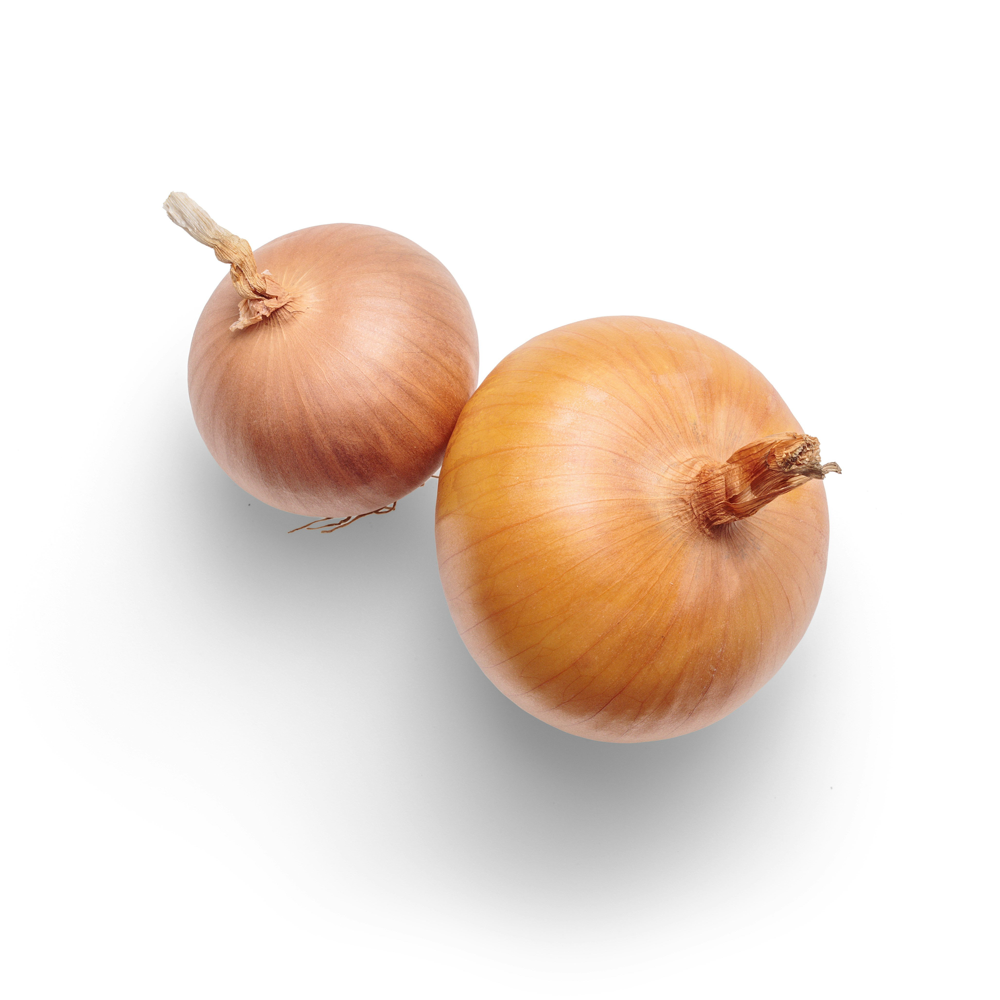

Tortilla de patata

¡Hablemos de palabras mayores! Si hay un plato que define nuestra gastronomía, que levanta pasiones y que genera debates capaces de dividir a familias enteras.
¿Con cebolla o sin cebolla? ¿Cuajada o de esas que "lloran" en el plato? En este blog somos demócratas, pero te voy a contar un secreto: para mí, una tortilla sin cebolla es como un jardín sin flores. Hoy vamos a preparar la versión clásica, jugosa y doradita, esa que te hace cerrar los ojos en el primer bocado.
.El secreto de esta receta no está en complicarse la vida, sino en tratar con cariño a nuestras humildes patatas. No buscamos simplemente freírlas, queremos que se confiten lentamente en el aceite, fundiéndose con la cebolla hasta que ambas alcancen ese tono ambarino que promete gloria bendita. Olvida las prisas y los fuegos arrebatados; la tortilla de patatas requiere paciencia, un buen puñado de huevos camperos y, sobre todo, ese momento de valentía al darle la vuelta que nos hace sentir auténticos chefs por un segundo.
Saca la sartén buena (sí, esa en la que no se pega ni el aire) y ¡vamos a los fogones!
Ingredientes
- 600g de patatas, peladas y cortadas en rodajas
- 1 cebolla mediana, picada
- 5-7 huevos de buena calidad
- Sal al gusto
- Aceite de oliva virgen extra para cocinar



Instrucciones
- Pela y lava las patatas. Córtalas en láminas finas (tipo panadera) o en trozos pequeños e irregulares.
- Pica la cebolla en dados pequeños.
- Calienta abundante aceite en una sartén a fuego medio.
- Añade las patatas (y la cebolla). El secreto no es tostarlas, sino confitarlas: deben quedar blandas y ligeramente doradas.
- Cocina a fuego lento durante unos 15-20 minutos.
- Bate los huevos en un bol grande con un toque de sal.
- Escurre bien las patatas y la cebolla para eliminar el exceso de aceite y añádelas al bol con el huevo.
- Pon una sartén antiadherente al fuego con apenas unas gotas de aceite. Vierte la mezcla y cocina a fuego medio-alto durante un minuto para que se forme la base. Luego baja el fuego.
- Cuando veas que los bordes están cuajados, coloca un plato llano más grande que la sartén encima. Sujeta con firmeza y, en un movimiento rápido y decidido, da la vuelta a la sartén
- Desliza la tortilla de nuevo en la sartén para cocinar el otro lado. Remata los bordes con la espátula para darle esa forma redondeada perfecta.
- Cocina entre 1 y 3 minutos más, dependiendo de si te gusta "babosa" (poco hecha) o bien cuajada.
Vídeo recomendado
Por si te ha quedado alguna duda o te apetece ver otra receta parecida, te dejo por aquí un vídeo de otro cocinillas.